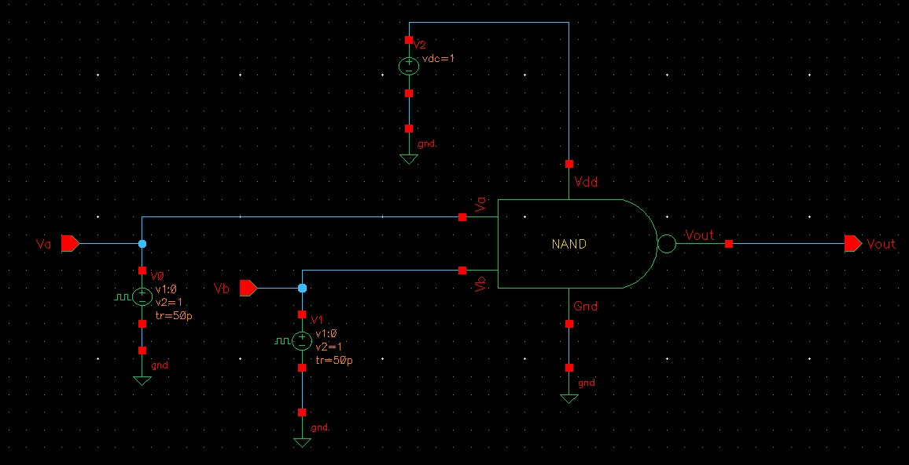
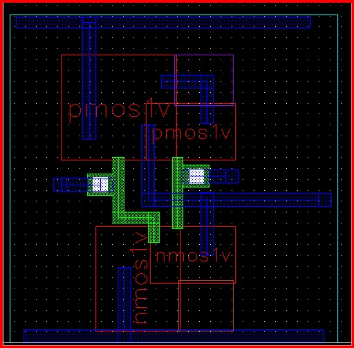
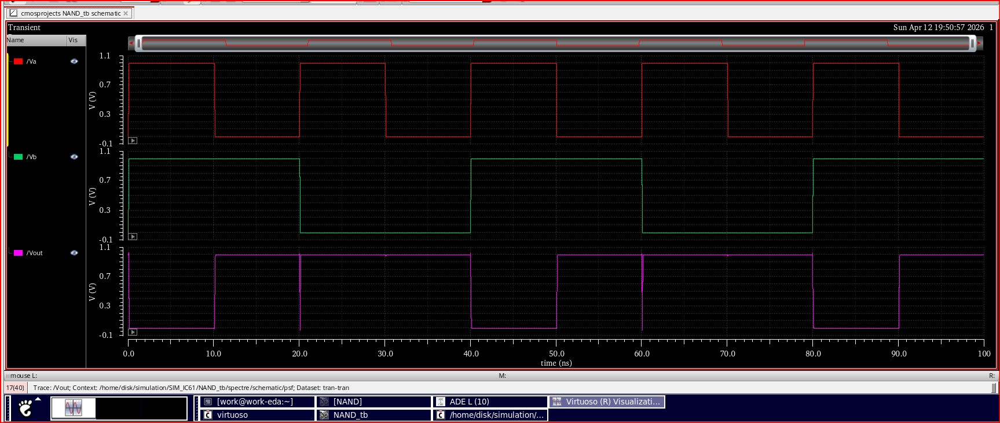

CMOS NAND Gate Schematic, Layout & Transient Simulation
Overview
This project demonstrates the complete design flow of a CMOS 2-input NAND gate using Cadence Virtuoso. The work includes transistor-level schematic design, testbench creation, physical layout implementation, DRC/LVS verification, and transient simulation using Spectre. The goal was to implement a fully functional NAND gate and validate its behavior through waveform analysis.
Objectives
- Implement a CMOS NAND gate using PMOS and NMOS transistors.
- Create a testbench with realistic input sources.
- Perform transient simulation to verify logic behavior.
- Design the physical layout following PDK design rules.
- Validate the layout using DRC checks.
Tools & Technologies
- Cadence Virtuoso (Schematic, Layout, ADE)
- Spectre Simulator
- CMOS PDK (gpdk090)
- Assura verification
Design Methodology
1. Transistor-Level Schematic
The 2-input NAND gate is implemented using complementary CMOS logic:
- PMOS transistors connected in parallel between Vdd and the output node.
- NMOS transistors connected in series between the output node and ground.

Transistor-level schematic of the CMOS 2-input NAND gate.
2. Testbench Setup
A dedicated testbench was created to verify the NAND gate:
- Two pulse voltage sources drive inputs Va and Vb.
- Input characteristics:
- Voltages: minimum of 0 V and maximum of 1 V
- Rise time: 50 ps
- Fall time: 50 ps
- Supply voltage: Vdd = 1 V DC.
- Output node Vout is probed during transient simulation.
The testbench applies all four input combinations (00, 01, 10, 11) to validate the NAND truth table.

Testbench schematic used for transient simulation of the NAND gate.
3. Physical Layout
The physical layout of the NAND gate was implemented following the PDK design rules:
- Defined PMOS and NMOS active regions in their respective wells.
- Placed polysilicon gates, contacts, and metal interconnects.
- Respected spacing, enclosure, and alignment constraints.
- Ran:
- DRC (Design Rule Check) – no violations.
- LVS (Layout vs. Schematic) – layout matches schematic.
The final layout represents a clean, manufacturable standard-cell style NAND gate.

CMOS layout showing PMOS and NMOS regions, routing, and contacts.
4. Transient Simulation Results
A transient analysis from 0 ns to 100 ns was performed:
- Signals observed: Va, Vb, and Vout.
- Vout remains high for all input combinations except when both Va and Vb are high.
- Waveforms show clean digital transitions and correct logic levels.
- Rise/fall times are consistent with the chosen device sizing and loading.
These results confirm the correctness of both the schematic and the extracted layout.

Transient simulation waveforms for Va, Vb, and Vout demonstrating correct NAND behavior.
Results
- Fully functional CMOS 2-input NAND gate.
- Verified at schematic and post-layout levels.
- Clean DRC and LVS reports.
- Transient waveforms match the expected NAND truth table.
Key Learnings
- Transistor-level implementation of CMOS logic gates.
- Impact of device sizing on timing and signal integrity.
- Building and configuring simulation testbenches.
- Applying layout design rules and running DRC/LVS.
- Interpreting transient waveforms for digital verification.